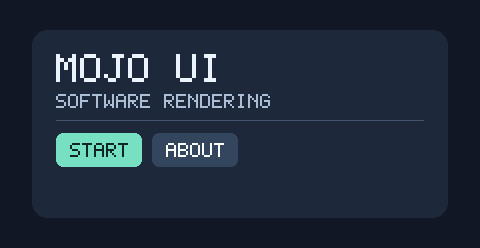

Software rendering in Mojo
Learn rendering one pixel at a time
Follow a button from a few lines of Mojo to a PNG. Then learn how caches, SIMD, CPU cores, and a GPU can change the cost of drawing it.
Amirhossein, bring what you know from Rust and Python. You can read this renderer in small pieces and see what each piece does to the image.

pixi run example. Everything you see here was drawn by the CPU.Pick up the guide
Start with the demo and keep the PNG open beside the source. The next chapters explain the ideas behind the calls you just read.
- Follow a frameTrace layout, drawing, blending, and PNG output through the source.
- Rendering 101Read a pixel grid, smooth an edge, and make sense of alpha.
- The graphics stackFind the role of X11, Direct3D, SDL, and toolkits.
- Mojo and performanceFollow the data through memory, CPU lanes, and cores.
- Hands-on exercisesTime your first fill and work up to a window host.
- Glossary and readingLook up a term or jump to the official documentation.
Run the demo
With Pixi installed, run these commands from the repository root. Open examples/out/demo.png in an image viewer. This library is headless, so the program saves the image and exits.
pixi install --locked
pixi run exampleYou can also open docs/index.html directly in your browser to read the guide from your checkout.